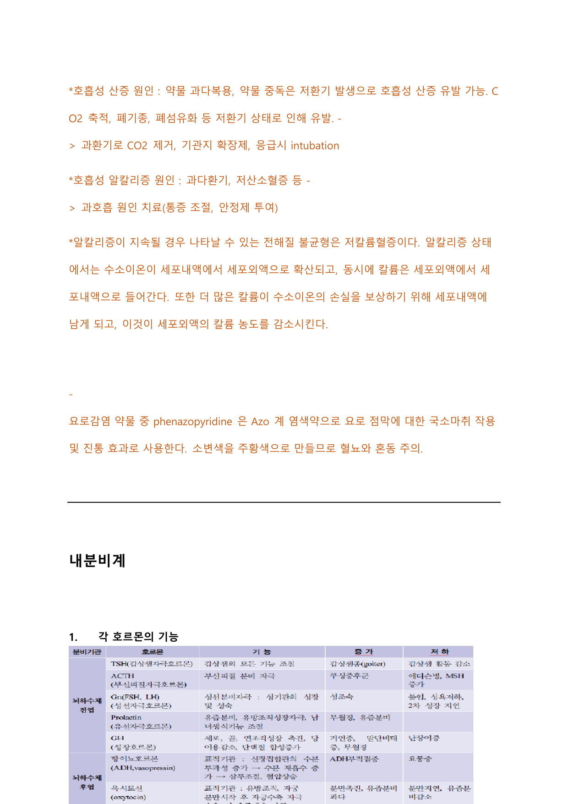

내분비계
호르몬을 분비하는 뇌하수체·갑상선·부갑상선·부신·췌장 등의 기능 이상에 따른 내분비 질환과 대사장애를 다룬다.
1 각 호르몬의 기능
| 호르몬 | 분비기관·표적 | 기능 | 증가/저하 시 |
|---|---|---|---|
| TSH (갑상선자극호르몬) | 갑상선 | 갑상선의 모든 기능 조절 | 증가: 갑상선기능항진(goiter) / 저하: 갑상선 활동 감소 |
| ACTH (부신피질자극호르몬) | 부신피질 | 부신피질 분비 자극 | 증가: 쿠싱증후군 / 저하: 애디슨병 |
| FSH·LH (성선자극호르몬) | 성선 | 성기관의 성장·성숙 및 성성숙 | 저하: 성성숙 지연·성장 지연 |
| Prolactin (유선자극호르몬) | 뇌하수체 전엽 / 유방 | 유즙분비, 유방조직 성장 자극, 생식기능 조절 | 증가: 무월경·유즙분비 |
| GH (성장호르몬) | 뇌하수체 / 골·연조직 | 골·연조직 성장 촉진, 당 이용 감소, 단백질 합성 증가 | 증가: 거인증·말단비대 / 저하: 난쟁이증 |
| ADH (항이뇨호르몬, vasopressin) | 뇌하수체 후엽 / 신장 | 신장 집합관 수분 투과성 증가 → 수분 재흡수 증가, 삼투압 조절 | 증가: 요량 감소·SIADH / 저하: 요붕증 |
| Oxytocin (옥시토신) | 뇌하수체 후엽 / 유방·자궁 | 분만 촉진, 유즙분비, 분만 시 자궁수축 자극 | 저하: 분만지연·유즙분비 감소 |

2 요붕증(DI) vs SIADH Diabetes Insipidus / SIADH
SIADH(항이뇨호르몬 부적절분비증후군)는 ADH 분비가 과다해져 세뇨관에서 수분 재흡수가 증가하고 혈관 내 수분량이 증가하여 저나트륨혈증, 혈청삼투압 감소, 수분정체가 야기되는 상태이다.
요붕증(DI)은 ADH 생산이나 분비의 결핍으로 세뇨관에서 수분 재흡수가 감소하고 혈관 내 수분량이 감소하여 고나트륨혈증과 소변량 증가를 야기하는 상태이다.
| 요붕증(DI) | SIADH | |
|---|---|---|
| ADH | 생산·분비 결핍(감소) | 과다 분비 |
| 소변 | 다뇨, 희석된 다량의 소변 | 소변량 감소(농축) |
| 혈청 Na | 고나트륨혈증 | 저나트륨혈증 |
| 혈청 삼투압 | 상승(요삼투압보다 높음) | 감소(요삼투압이 혈청삼투압보다 높음) |
- SIADH: 중추신경계 장애, 약물요법, 악성 종양(항암치료 중 암환자에서 나타날 수 있음)
- 요붕증 분류: ① 중추성(시상하부·뇌하수체 병변으로 ADH 합성·분비 장애), ② 신장성(ADH 분비는 적절하나 신장 반응이 감소), ③ 심인성(갈증중추의 구조적 병변·심리적 문제). 개두술·두부손상에서 이차적으로 발생 가능.
- SIADH: 근육경련·근육약화, 소변량 감소·체중 증가, 심하면 뇌부종으로 기면·혼란·두통·발작·혼수(대부분 무증상)
- 요붕증: 희석된 다량의 소변, 혈청삼투압·혈청나트륨 상승
- SIADH: 소변과 혈청 삼투압을 동시 측정 → 혈청삼투압이 소변삼투압보다 훨씬 낮게 측정됨
- 요붕증 수분제한검사: 모든 수분을 8~16시간 제한하고 매시간 혈압·체중·소변량·소변삼투압 사정. vasopressin 투여 후 소변삼투압을 1시간 뒤 측정해 9% 이상 증가하면 중추성, 반응 없으면 신장성으로 구분.
- 정상 혈장삼투압 275~295 mOsm/kg, 요비중 정상치 1.003~1.030
- SIADH: 경한 저나트륨혈증은 수분 제한, 심각한 경우 3% NaCl IV 주입하고 하루 수분섭취량 500ml로 제한. 이뇨제는 나트륨 소실을 촉진하므로 경한 경우 사용 가능. 약물 democlocycline(vasopressin의 원위세뇨관 작용 억제), lithium, dilantin. 교정은 천천히 시행.
- 중추성 요붕증: 저장성 생리식염수나 5% 포도당용액 정맥 투여로 소변량 대체, 호르몬 대체 필수(유사제 desmopressin 투여).
- 신장성 요붕증: 하루 3g 이내 나트륨 제한 저염식이, thiazide 계 이뇨제 고려.
활력징후, I/O, 체중 측정, 의식수준 사정, 저나트륨혈증 징후 사정.
3 갈색세포종 pheochromocytoma
부신수질 종양으로, 에피네프린·노르에피네프린에 해당하는 카테콜라민을 과량 생산하여 발생한다. 카테콜라민 분비과다로 심한 고혈압이 발생하며, 치료하지 않으면 심근증을 일으켜 사망하기도 한다.
전형적 증상 3가지: 심한 두통, 심한 발한, 빈맥(Palpitation, Headache, Episodic sweating).
24시간 urine collection을 통해 metanephrines와 catecholamines를 검사한다.
4 애디슨병 vs 쿠싱증후군 Addison's disease / Cushing's syndrome
애디슨병(부신기능부전, adrenal insufficiency)은 오랫동안 부신 기능이 저하되어 cortisol이 부족해 체내 전해질 변화를 야기하는 질환이다. 뇌하수체 전엽의 ACTH 분비 저하 또는 부신피질의 cortisol 분비 저하 시 발생한다.
쿠싱증후군은 cortisol 과잉 분비에 의해 신체 변화가 일어나는 질환이다.
| 애디슨병 | 쿠싱증후군 | |
|---|---|---|
| cortisol | 부족(저하) | 과잉(증가) |
| 주요 원인 | 부신조직을 파괴하는 자가항체를 생산하는 자가면역질환이 가장 흔함, 스테로이드 장기 복용 후 갑자기 중단·수술 이후 | 부신 종양(코르티코스테로이드 과잉 생산), 스테로이드 장기 복용, 뇌하수체 선종(ACTH 의존성)·부신 종양(ACTH 비의존성)·의인성 |
| 증상 | 피로감·식욕부진·체중감소·저혈압, 알도스테론 결핍으로 나트륨 대량 배출 → 심한 탈수·복통·구토·혼수 | 둥근 얼굴(moon face)·buffalo hump·피부 striae·여드름·고혈압·체중증가·체모 증가·무월경·우울증(대표 징후는 비만) |
| 진단 | 혈중 코르티코스테로이드 측정, ACTH test, ITT(insulin tolerance test) | 24시간 소변·채혈로 스테로이드 증가 확인, overnight low dose dexamethasone suppression test |
| 치료 | 스테로이드 복용(대부분 평생) | 스테로이드 서서히 감량 중단(tapering off), 부신 선종은 약물 후 수술로 종양 제거 |
- ITT(인슐린 내성검사): 공복 상태에서 정맥으로 인슐린 투여 후 매 3분마다(15분간) 채혈하여 혈당을 측정, 혈당 감소 정도를 계산해 인슐린 효과를 판정.
- overnight low dose dexamethasone suppression test: 밤 11시~자정 경 경구로 dexamethasone 1mg 복용, 다음날 오전 8시 채혈하여 cortisol·dexamethasone 농도를 측정 → 뇌하수체에 의한 ACTH 분비 억제 여부 확인.
- 애디슨병: 스테로이드 복용으로 골다공증 위험 증가 → 칼슘·비타민 D 섭취 교육. 저나트륨혈증이 유발되므로 고나트륨식이 교육.
- 뇌하수체 절제술 후 부신기능 저하로 cortisol 부족 시 부신위기 발생 → 저혈압·심한 오심·구토·복통·발열·혼수 가능, 치료는 스테로이드 투여.
| Dexamethasone | Prednisolone | |
|---|---|---|
| 분류 | 둘 다 glucocorticoid 스테로이드제(항염증·항알레르기 작용, 관절염·기관지염·피부·알러지 등 사용) | |
| 작용 시간 | long acting, 반감기 36~72시간 | intermediate acting, 반감기 3~4시간 |
| 항염증 효과 | 강력(소량으로도 충분) | 상대적으로 약함 |
- 장기 사용 시 부신의 corticosteroid 생성 능력 저하 → 갑자기 중단하면 오심·구토·피로·식욕감소·체중감소·설사·복통·쇼크 등 부족 증상 유발. 점차 감량하며 중단.
- 면역억제작용 → 생백신 예방접종 금지, 감염원 노출 회피.
- 소화성 궤양·가슴쓰림·위통 → 증상 시 의료진에게 알리고 PPI 사용.
- 백내장·녹내장·시야손실 등 안과 부작용 → 정기 시력검진.
- 골밀도 감소·골다공증 → 낙상 예방 교육.
- 나트륨 과다 섭취는 체액 저류 → 나트륨 적게, 비타민·단백질·칼슘 풍부한 음식 섭취, 매일 일정한 시간 체중 측정.
5 갑상선기능저하증 vs 갑상선기능항진증
갑상선기능저하증은 갑상선호르몬이 잘 생성되지 않아 체내 갑상선호르몬 농도가 저하·결핍된 상태이다. 주요 원인은 갑상선염 등 갑상선 자체 문제 또는 뇌하수체 기능저하증.
갑상선기능항진증은 갑상선호르몬이 과다 분비되어 갑상선중독증을 일으키는 상태이다. 주요 원인은 그레이브스병, 뇌하수체 선종, 갑상선호르몬제 과다복용.
| 갑상선기능저하증 | 갑상선기능항진증 | |
|---|---|---|
| 호르몬 | TSH 상승, T4 저하 (무증상: TSH 상승, T4 정상) | TSH 감소, T3·T4 증가 (무증상: TSH 감소, T3·T4 정상) |
| 증상 | 만성 피로·식욕부진·체중 증가·피부건조·변비·월경 과다·추위 민감·머리카락·손톱이 쉽게 깨짐 | 식욕 왕성한데 체중 감소·더위 못 참음·빈맥·두근거림·손 떨림(미세 진전)·안절부절·불안·초조·불면증·악몽·심부건반사 증가 |
| 진단 | 혈중 T4 또는 T3 감소 | 혈중 T4 또는 T3 상승 |
| 대표 약물 | levothyroxine(갑상선호르몬제) | methimazole, propylthiouracil(항갑상선제), 빈맥에 베타차단제 |
| 호발 | 60세 이상 여성, 가족력, 자가면역질환, 방사성요오드 치료력 | 주로 20~40대 여성, 60세 이상에서는 심방세동 등 심혈관 증상 흔함 |
| 질환 | TSH | T4 | T3 | Free T4 |
|---|---|---|---|---|
| 일차성 갑상선기능저하증 | 증가 | 감소 | 정상 또는 감소 | 감소 |
| 일과성 신생아 갑상선기능저하증 | 증가 | 감소 | 감소 | 감소 |
| 하시모토병 | 증가 | 정상 또는 감소 | 정상 또는 감소 | 정상 또는 감소 |
| 그레이브스병 | 감소 | 증가 | 증가 | 증가 |
| 갑상선자극호르몬 결핍 | 정상 또는 감소 | 감소 | 감소 | 감소 |
| 전신성질환 초기 | 정상 | 정상 | 감소 | 정상 |
| 전신성질환 후기 | 감소 | 감소 | 감소 | 정상 또는 감소 |
- 갑상선기능저하: levothyroxine 보통 성인 75~125mcg(약 1.6mcg/kg/d), 노인은 성인 복용량의 75% 이하. 과다 사용 시 골밀도 감소·골다공증 부작용.
- 갑상선기능저하 환자는 LDL 대사 감소, TSH가 10을 초과할 때 이상지질혈증 발생. levothyroxine 복용 중 total/LDL cholesterol 증가 시 statin보다 levothyroxine 용량 조절을 우선.
- 갑상선기능항진: methimazole 또는 propylthiouracil(낮은 빈도지만 태아기형·간독성 위험), 갑상선 절제술, 방사성요오드 치료(고활동성 갑상선 조직 파괴). 임신 1기(13주 이내) propylthiouracil, 2기(14~27주) 이후 methimazole 권고.
- 그레이브스병: T3·T4 과증가 시 발생.
- recurrent laryngeal nerve 손상 → 쉰 목소리(voice problem), 심하면 aspiration 위험 증가.
- 부갑상선이 함께 제거되거나 혈관손상 시 부갑상선기능저하증 → 혈중 칼슘 저하로 입 주변·손발끝 저림. (갑상선 절제술 환자의 근위축 증상 시 부갑상선검사·혈중 칼슘 농도 검사 추가)
- neck tension·tenderness, swallowing problems, irritated windpipe 등.
- 갑상선 검진: 대상자의 턱을 약간 숙여 한쪽으로 기울인 다음 반대쪽 갑상선을 촉진. 물을 삼키면 위로 올라갔다 내려오는 것을 관찰.
- 가장 흔한 갑상선암 유두암(papillary carcinoma)은 방사선 노출력과 밀접. 특징적 소견은 갑상선 고립결절(solitary thyroid nodules).
- 정신장애·인지장애를 보인 노인 여성에서는 갑상선저하증 선별검사 필요.
6 칼슘-비타민D-인산 관계(부갑상선) PTH·Vit D·Calcitonin
부갑상선호르몬(PTH)은 비타민 D, 칼시토닌과 함께 체내 칼슘·인 대사를 조절한다. 혈액 칼슘농도가 높으면 칼슘수용체가 활성화되어 PTH 분비가 감소하고, 낮아지면 부갑상선세포에서 PTH 분비가 증가한다.
PTH는 주로 뼈·신장·장에서 작용한다.
- 뼈: 세포외액으로 칼슘을 분비하도록 함
- 신장: 칼슘을 재흡수하고 인을 배설
- 장: 비타민 D 작용을 강화하여 음식을 통한 칼슘 흡수를 증가
비타민 D는 칼슘과 인을 장에서 흡수시키고 PTH를 억제하는 작용을 한다.
7 저칼슘혈증 / 고칼슘혈증
혈중 칼슘 정상 수치: 8.4~10.2 mg/dL
- Trousseau's sign: 수축기 혈압 이상으로 3분간 혈압계 커프를 팽창시키면 수부 근육이 연축하면서 손목과 metacarpophalangeal joint가 flexion되고 interphalangeal joint가 extension되며 엄지손가락이 안쪽으로 내전됨.
- Chvostek's sign: 안면신경이 분포하는 귀 앞쪽을 두드릴 때 입술이 twitching되고 얼굴근육에 경련이 생김.
경도는 무증상. 중등도 이상에서는 신경세포막의 Na 이온 투과도 감소로 신경전도가 sluggish해져 발생: 장(변비·오심·구토·복통·식욕부진), 뇌 기능장애(혼돈·우울증·섬망·혼수), 근쇠약, 심한 경우 부정맥·사망. 다량의 소변 배설로 탈수·갈증, 신결석 흔함. 병리적 골절 위험.
고칼슘혈증: 수분섭취·수액공급으로 신장에서 칼슘 배설을 촉진하고 탈수 예방. 체내 수분 축적 예방을 위해 이뇨제 사용. 비스포스포네이트·칼시토닌으로 뼈로부터 칼슘 방출을 늦춤.
저칼슘혈증·고칼슘혈증은 심장 리듬 이상·부정맥을 유발할 수 있다.
- 저칼슘혈증: QT interval 연장
- 고칼슘혈증: QT interval 단축
8 당뇨 Diabetes Mellitus
| 1형 당뇨병 | 2형 당뇨병 | |
|---|---|---|
| 기전 | 췌장 베타세포 파괴로 인슐린 분비 불가(자가면역질환) | 인슐린 저항성 증가 또는 인슐린 분비량 부족 |
| 호발 | 40세 이전, 과체중이 아닌 경우가 많음 | 40세 이후, 과체중인 경우가 많음 |
| 비율 | 전체의 약 10% | 전체의 약 90% |
노화, 가족력, 운동부족, 비만, 패스트푸드 등 식이 습관, 고콜레스테롤혈증, 임신성 당뇨병의 과거력.
3다 증상(다음·다갈·다뇨)과 함께 피로·무기력·흐릿한 시야·상처 회복 지연.
- HbA1c(당화혈색소), FPG(공복 혈장 포도당), OGTT(경구 포도당 부하검사) 시행.
- 진단 기준: HbA1c ≥ 6.5%, 공복혈당 ≥ 126 mg/dL, 75g OGTT 2시간 후 혈당 ≥ 200 mg/dL. 3가지 중 2가지 이상 충족 시 바로 확진, 한 가지만 충족하면 다른 날 재검사.
- 당뇨 전형 증상(다뇨·다갈·다음·체중감소)이 있으면서 random plasma glucose ≥ 200 mg/dL인 경우 진단 가능.
- HbA1c 6.5% 이상이면 당뇨 / 5.7~6.4%는 공복혈당장애. 2형 당뇨를 가장 빨리 진단할 수 있는 혈당 이상은 식후 혈당 증가.
- 1형: 자가면역질환이므로 인슐린 요법.
- 2형: 생활습관개선이 기본, 혈당조절 목표는 HbA1c 6.5% 미만(환자별 개별화). 첫 진단 시 HbA1c 7.5% 미만이면 생활습관조절 + metformin 단독요법 시작. 7.5% 이상이거나 단독요법 3개월 내 목표 미도달 시 기전이 다른 두 약제 병합.
- 약물요법으로도 목표 미도달 시 인슐린요법. 진단 초기라도 HbA1c 9.0% 초과·대사 이상 동반·고혈당이 심하면 초기부터 인슐린 사용 가능.
- 심한 비만의 2형 당뇨 환자에게는 체중감량 수술치료 가능.
| 약물 | 기전 | 이점 | 부작용·주의 |
|---|---|---|---|
| Metformin (biguanide) | 간에서 포도당 합성 억제·인슐린 저항성 약화, 말초 조직 인슐린 작용 증가 | 저혈당 유발하지 않아 1차 약제로 많이 사용 | 오심·구토·복부불편감 등 위장관 증상. 젖산산증(lactic acidosis) 유발 위험(신장애 시 젖산 제거 저하). 방사선 조영제 배출 지연시키므로 eGFR 60 ml/min 이하면 약 48시간 복용 중단. 신부전·간부전 환자 금기. |
| GLP-1 수용체 효능제 | 인크레틴(GLP-1) 유사물질로 췌장 베타세포 인슐린 분비 증가, 식후 글루카곤 억제, 위배출 지연 | 식욕 억제·체중감소 유도, 인크레틴 효과 감소한 2형 당뇨에 유용. exenatide, liraglutide | 구역·구토·설사·변비·위마비. 췌장염과 연관 → 심한 복통 시 즉시 중단·진료. |
| DPP-4 억제제 | 인크레틴(GLP-1)을 분해하는 효소 DPP-4를 억제 → GLP-1 활성화로 인슐린 분비 증가 | 경구투여 시 잘 흡수, 음식물 영향 없음. sitagliptin, gemigliptin | 두통·비인두염 |
| SGLT2 억제제 | 근위세뇨관에서 SGLT2 작용을 막아 포도당 재흡수 차단 → 포도당 배설 증가로 혈당 강하 | 인슐린 비의존적 작용. 포시가정·자디앙정 | 소변에 당이 많아져 요로감염·생식기감염 증가 |
| 인슐린 | 체내 인슐린 직접 투여(속효성·지속성·혼합형) | 환자 상태에 맞는 약제 선택 가능 | 저혈당 위험 |
| Sulfonylureas | 췌장 베타세포에서 인슐린 분비 촉진. glimepiride, glyburide | — | 체중증가·저혈당(단독 사용 시 저혈당 가능성 큼) |
| Meglitinide analogues | 인슐린 분비 증가, 반감기 짧아 식전 복용 | 식후 혈당 조절에 기여 | — |
| AGI (alpha-glucosidase inhibitors) | 2형 당뇨 치료. acarbose, miglitol, voglibose | — | 위장장애가 주요 부작용. IBD·신기능 장애 시 복용 회피 |
2형 당뇨와 고혈압을 진단받은 환자에게 권장하는 항고혈압제는 ACE inhibitor(-pril), ARB, BB, CCB 중 amlodipine·diltiazem·verapamil이다.
- 인슐린 교육: 올바른 주사 방법, 주사 부위 합병증 확인.
- 운동: 적어도 1주일에 3회 이상 중강도 유산소 운동, 비만 시 적극적 체중 관리.
- 식이: 당 지수가 낮은 잡곡류·콩·과일·채소·유제품 섭취 권장.
- 금주·금연.
- 혈압 조절·나트륨 섭취 줄이기.
- 발 관리: 상처 회복 지연되므로 물집·상처 자주 확인, 발톱은 직선으로 자르기, 맨발로 다니지 않고 신발을 너무 꽉 맞게 신지 않기.
- 저혈당: 사탕·초콜릿 등 즉시 섭취할 수 있는 것을 휴대.
9 당뇨 합병증
대표적 합병증: 당뇨병성 신장병증, 당뇨병성 신경병증, 당뇨병성 망막병증, 저혈당, 당뇨병성 케톤산증(DKA).
미세혈관 합병증 중 하나로 초기 소견은 소변에 미량의 알부민이 빠져나가는 미세알부민뇨 단계. 매년 1회 이상 eGFR과 소변검사(단백뇨) 확인 권장. 발생 시 혈당 조절과 함께 단백질 섭취 제한.
높은 혈당으로 신경섬유가 손상되어 발생, 주로 말초신경계에 나타남. 저린감·무감각·이상 감각 등. 말초신경 감각 검사, 하지 혈류 검사, 근전도 검사, 발목상완지수 시행. 치료는 혈당 조절·진통제로 통증 조절, 술·담배는 혈액순환을 방해하므로 금주·금연.
망막 순환 장애로 망막 미세혈관이 손상되는 질환. 초기 소견은 서서히 시력 감퇴. 안저검사·시력검사·망막혈관 검사·혈중 지질 농도 검사 시행. 치료는 혈당·혈청 지질·혈압 조절, 금연.
- 망막성 미세동맥류는 작은 붉은 반점(small red dots), 삼출물 시 면화반(cotton wool spots)으로 확인 — 모두 당뇨성 망막병증의 소견.
- 시력저하·깜박이는 빛·부유물·변형시증 호소 시 망막박리 의심(날파리증·광시증·시야장애·변형시증).
당뇨의 급성 합병증으로 고혈당·대사성 산증·케톤증이 특징. 1형 당뇨 환자가 갑자기 인슐린 투여를 중단하거나, 감염·수술 등 스트레스 시 발생. 구토·복통·호흡 시 과일향 냄새·빈맥·저혈압·의식변화 등 다양한 증상.
검사: 혈당·전해질·신기능 검사, ABGA, 소변·혈장 내 케톤체 검사.
- 치료: 우선 수액 보충, 인슐린과 전해질 공급으로 대사 장애 교정, 유발 원인(감염 등) 치료. 중탄산염 투여는 거의 요구되지 않으나 pH 6.9 미만 시 bivon을 등장성 수액과 혼합 투여 권장.
- IV 인슐린 → SC 전환 시: 단기형 IV 인슐린을 중단하기 전 장기형 SC 인슐린을 먼저 투여하고, SC 시작 후 1~2시간 동안 IV 인슐린을 유지.
- 젖산 증가는 부적합한 조직 관류·부족한 산소 공급을 의미하며 DKA에서 대사성 산증으로 이어질 수 있음.
일반적으로 혈당이 400을 넘고 케톤뇨증은 적거나 없다. 과도한 이뇨작용·심한 탈수로 혈중 삼투압 상승·요비중 상승, 빈맥·혈당 증가·고삼투압 야기. 아세톤 호흡은 HHS가 아닌 DKA에서 발생. HHS에서는 신경학적 이상을 보인다.
혈당 70 mg/dL 이하. 배고픔·발한·창백·불안·졸림·의식 저하. 저혈당 증상이 있거나 무증상이라도 혈당 70 mg/dL 이하면 당질 섭취, 경구 불가능 시 포도당 정맥 투여. 15분 후 혈당 재측정. 회복용 음식은 주스 반 잔, 사탕 3~4개. 심한 저혈당으로 의식 저하·무반응 환자는 물 50ml에 25g 포도당 용액을 정맥주사하고 30분 후 재사정.
10 이상지질혈증 Dyslipidemia
Triglycerides 상승에 영향을 미치는 2가지 요인은 혈당수치 상승과 과도한 음주. TG와 HbA1c가 높은 당뇨 환자는 HbA1c가 정상화되면서 TG가 감소할 수 있다.
- Total cholesterol < 200 mg/dL
- HDL cholesterol > 40 mg/dL
- LDL cholesterol < 130 mg/dL
- Triglycerides < 150 mg/dL
11 대사증후군 Metabolic syndrome
아래 기준 중 3가지 이상 충족 시 진단:
- 허리둘레: 남자 90cm, 여자 85cm 이상
- 혈압: 130/85 mmHg 이상 또는 고혈압약 복용 중
- 중성지방: 150 mg/dL 이상
- HDL cholesterol: 남자 40 mg/dL, 여자 50 mg/dL 미만 또는 고지혈증약 복용 중
- 공복혈당: 100 mg/dL 이상 또는 혈당조절약 투여 중